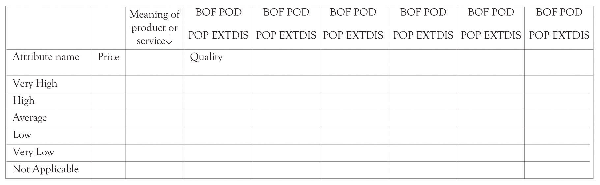

The purpose of the FAD templateUsed to identify the features and attributes that can be used for product and service differentiation. is to try to facilitate and provide a degree of structure for conceptualizing new products and services (see Section 7.11 "Exhibit 1: FAD Template"). The first step in using the FAD template is to provide a description of the product or service that is being considered. The second step in using the FAD template involves describing the meaning of the product. Several product meanings have been listed to provide a starting point. The next step in using the FAD template involves identifying potential attributes. The attributes can be features, performance characteristics, form, design, and even additional meanings. We have included a few attributes that are often considered, but you are encouraged to seek the attributes that are important in the development of your product or service. One goal of using the FAD template is to facilitate product differentiation. Focusing on attributes that are exciters and Blue Ocean features will assist in the differentiation process. It is sometimes helpful to focus on features that are on the verge of extinction or features that consumers are not satisfied with or wish they were not there. Considering exciters and disastisfiers helps to expand the way designers view the meaning behind a product or service, and it allows the designer to gain deeper insight into how to improve the current performance of the product.
The final stage of using the FAD template is to provide a way to visualize the product by: a drawing, a schematic of the product or service, or a physical model (see several examples in Section 7.13 "Appendix 1: Examples of Prototypes"). Learning-by-doing means that you make and build things. You try experiments and you construct prototypes. Prototypes need to be constructed for tangible products, for services, and also for systems applications. If the product is a tangible product, then a generic mock-up of the product needs to be constructed as early as possible. The idea is to develop a very rough prototype of the product or service. There are many different ways to do this. It could be a report developed in a word-processing program, an interface developed in a presentation program, a sketch using a vector or raster-based drawing program or even drawn using a pencil on the back of a napkin, a three-dimensional (3D) model developed in Google’s free SketchUp program, or a flow diagram illustrating a process. If the product is a computer application, then a prototype can be constructed using a rapid prototyping language or demonstrated via a presentation package such as PowerPoint. There are also many excellent applications available for tablet computers that are very effective for developing mock-ups of applications and for drawing or sketching preliminary product ideas.
Services should also be prototyped. A uniquely designed service can be used as a way to differentiate a firm from the competition. Service design should always focus on the customer and how the customer interacts with the business in receiving the service. These interactions between the customer and the business are referred to as the touch points or connections. There are many components that go into the design of a service. They include the people, the verbal and nonverbal interactions, the processes, the scripts, the tools, the materials, the infrastructure, and the technologies. Execution of the service is a function of how all the service components work together.
One popular tool for designing services is service blueprintingA visual and descriptive tool for modeling visible customer interactions with employees and processes that also illustrates how the hidden processes support the customer interactions.. It is a visual and descriptive tool for modeling visible customer interactions with employees and processes that also illustrates how the hidden processes support the customer interactions.Bitner et al. (2008). There are a number of tools that can be used to conceptualize, design, and test the design of the service including drawings, sketches, scenario analysis and task structuring, mock-ups, storyboarding, systems, Lego mock-ups, and many more (see http://www.servicedesigntools.org/repository). Because services often involve queues or lines, simulations can be used to understand how fast or how slow a service will be performed in a particular situation.
The goal of the first-cut prototype is to learn-by-doing, to get other people to understand what you are thinking about, and to help you understand what you are trying to do. Developing a prototype in some form or another is an important part of the learning-about and the learning-by-doing process that will facilitate creative insight.This notion is discussed in the chapter on innovation and is also the result of several research projects I have been involved with. See in particular Cerveny, Garrity, and Sanders (1986).
Many prototypes start out with paper and pencil and then become increasingly more sophisticated as they mature. The basic sequence of iterative design with stepwise refinement includes the following:
There are some very exciting prototyping tools for manufactured products. Although currently in their infancy, they have the potential to completely change the way that products are prototyped and eventually how everything will be manufactured.The Printed World (2011). These new tools are part of a new approach for manufacturing called additive manufacturing or desktop manufacturing. Rapid prototyping is becoming a reality because additive manufacturing assists in producing prototypes very quickly. One of the most promising technologies for implementing additive manufacturing is the 3D printer. Very detailed and complex plastic working models of products can be generated using 3D printers.In 2011, the 3D printers start at around $10,000 (just search for “3D printers” to see what is currently available.). There are hobbyists versions of 3D printers in the $1,000 range. The parts or products are made by using 3D digital descriptions to print successive thin layers of plastic on top of plastic until a 3D solid emerges. Some of these plastic products and parts can be used as final products and not just as prototypes. There are versions of the 3D printers that use titanium powder to construct very complex objects such as jewelry and avionics components. Several aviation companies are investigating the use of very large 3D printers to create entire aircraft wings.
Aged wine has always been attractive to wine enthusiasts and wine connoisseurs, but aged wine is expensive because of the time involved. A merlot can take up to 15 years to age and Shiraz-based wines may require 20 years of aging. Several products have been introduced and patents have been secured and applied for that are purported to speed up the aging process.Search for “wine aging” at the U.S. patent office and with any search engine. Suppose an inventor found that it was possible to dramatically speed up the wine aging process by exposing a wine to an electromagnetic field with a very specific magnetic field strength. Suppose that the same inventor found that the taste of all wines could be improved using the special aging process. The net effect is that the technology could reduce the time to produce fine aged wine and also increase the quality of low-priced wines as well as increase the status of the owner of the wine aging product. Section 7.14 "Appendix 2: FAD Template for Wine Aging Product" illustrates how the FAD template could be used to conceptualize a new wine storage refrigerator that can be used to age wine. This example will be extended in Chapter 9 "The Ten–Ten Planning Process: Crafting a Business Story" using the Ten–Ten planning process.
Chan Kim and Renée Mauborgne developed a technique they call the Strategy CanvasTool to understand where the competition is playing and investing their time and resources. Also used to identify new customer segments in uncontested market spaces. to assist in identifying a Blue Ocean market.Kim and Mauborgne (2005). A Blue Ocean market is essentially an uncontested new market with high profit and significant growth potential. They use the Strategy Canvas as a tool to assist in identifying Blue Ocean markets. One purpose of the Strategy Canvas is to understand where the competition is playing and investing their time and resources. Another purpose of the Strategy Canvas is to try to identify new customer segments in uncontested market spaces. The idea is simply to create new markets and attract customers.
One area where the Strategy Canvas is deficient is in the identification of attributes and features for competition and differentiation. The FAD template is ideally situated for assisting in that process. The FAD template can be used as an input device for constructing the Strategy Canvas by facilitating the identification of important attributes and features on which to compete.
The following approach can be used to develop a strategic canvas:
A generic Strategy Canvas with the FAD categories is illustrated in Figure 7.3 "Preliminary Strategy Canvas with FAD Categories". It incorporates the essential concepts from the FAD template into the development of a Strategy Canvas. Figure 7.4 "Potential Strategy Canvas for Nintendo Wii" illustrates how the Strategy Canvas could be used to position the Nintendo Wii. We identified what we believed is the key meaning of the Wii along with several important attributes and key design issues for the Wii. The feature categories that apply to the attributes are highlighted in bold. For example, the Appeal to the entire Family attribute is considered a point of differentiation and a Blue Ocean Feature. The attributes and their values are, of course, contingent on who actually constructs the Strategy Canvas and they will change very quickly according to the whims of the market. Figure 7.5 "Nintendo Wii Strategy Canvas" illustrates a more attractive graphic that was created using the Strategy Canvas data.
Figure 7.3 Preliminary Strategy Canvas with FAD Categories
Figure 7.4 Potential Strategy Canvas for Nintendo Wii

Figure 7.5 Nintendo Wii Strategy Canvas

The FAD strategic canvas can be used to determine where a company wants to differentiate themselves from the competition. The objective is to determine where you would add, delete, or change the level of a factor in order to identify a Blue Ocean. It can also be used to identify attributes or factors that could be eliminated because the product features are considered low-value, extinct, or dissatisfiers. It could of course be used to assist in identifying unique features that could be added. You can also use the ideas discussed earlier such as combining products, borrowing ideas from other industries and products, and flipping ideas.
It should also be noted that the approach can be used in conjunction with a SWOT (Strengths, Weaknesses, Opportunities, and Threats) analysisDiagram used to identify the major strengths and weaknesses in the design of existing and new products. diagram to identify the major strengths and weaknesses in the design of existing and new products.
Lateral Marketing, a related concept found in the marketing literature, can also be used to assist in identifying Blue Ocean markets. The goal of lateral marketingKotler and de Bes (2003). is to help create new markets by:
The lateral marketing approach along with the other ideas presented in this chapter complements the Blue Ocean approach as a mechanism for identifying how product features can be added, subtracted, and adapted to create innovative products and services. Not all products and services introduced will be Blue Oceans; nevertheless, the approach using the FAD template and the Strategy Canvas will certainly provide a useful tool for understanding the positioning of your products and your competitors.
Marketing research is a complementary and systematic avenue for identifying key attributes and marketing opportunities for products and services. The literature describes a number of approaches for identifying what features are relevant to consumers:
For additional and more detailed insight into the concepts and approaches for conducting market research, you are encouraged to read Naresh K. Malhotra and David F. Birk’s very thorough book on the topicMalhotra and Birks (2009). and the Cavusgil, Knight, Riesenberger, and YaprakCavusgil, Knight, Riesenberger, and Yaprak (2009). book on conducting international marketing research.